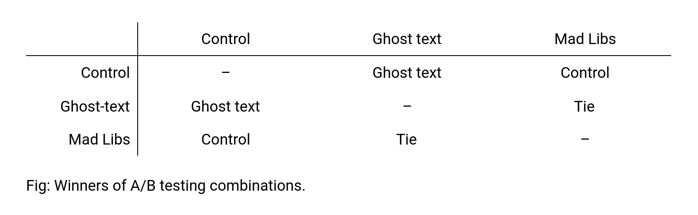

EXPERIMENT DESIGN Much of our feedback throughout the design process has been about the first task a user attempts when they visit our app: using our search function. We flipped between a mad-libs style search form with a lot of structure, and a completely free form search bar, but neither was really satisfactory to our users. We’d like to improve on our initial ideas and rigorously test which is better and why. We are operating under the assumption that our current implementation of the search function is the wrong implementation for our users, and that another version might more effectively communicate the capabilities and uses of the feature.
Our (quasi-)control is our current free-form search augmented with a better explanation. The first alternative option we’ll be testing is a search bar with animated ghost text that suggests possible search queries. We’ll also test another iteration of the mad-libs style form (a number of text boxes with specific requested inputs), improved based on our previous feedback.
As such, the things that will vary include the explanation text above the search bar, the ghost text, and the specificity of the search bar. In each of the three different versions, only the one element specific to that version will vary: the other two elements will be constant. For example, in the quasi-control version, the explanation text will be expanded, but the ghost text and number of search bars/function of the search bar will not be changed. Elements that will remain constant throughout all three versions include the task the test subject is assigned and the feedback received from searching (the search results and how they are displayed).
control search bar
ghost text search bar
madlibs search bar
In order to test all three versions against each other A/B-style, we’ll bring in at least three users and have them each look at two of our designs. We’ll start by asking them how easy they expect the task to be. We’ll then ask them to complete the task using our interfaces, and observe how quickly they’re able to accomplish it, and how frustrated they become. Finally, we’ll ask them how easy the task was, and how confident they are in being able to do a similar task again. Then we’ll give them each a number of cookies corresponding to how useful their feedback was.In order to test all three versions against each other A/B-style, we’ll bring in at least three users and have them each look at two of our designs. We’ll start by asking them how easy they expect the task to be. We’ll then ask them to complete the task using our interfaces, and observe how quickly they’re able to accomplish it, and how frustrated they become. Finally, we’ll ask them how easy the task was, and how confident they are in being able to do a similar task again. Then we’ll give them each a number of cookies corresponding to how useful their feedback was.
EXPERIMENT RESULTS During this study, we observed that our text explanation was useful, but not very exciting to our users. Several of our users expected the text to be clickable, which might be attributable to how the text was formatted in this prototype (the paragraphs were widely spaced apart). The ghost text went a long way toward helping the user understand how to actually interact with the site. Both the ghost text and the mad libs implementations changed the use of the app by prompting users to consider who they were donating to and why, as opposed to just how to get rid of their stuff; the mad libs version might have done so to greater extent because its “to support” search prompt is more explicit. We measured our “how easy is the task” variable before and after our testers used the prototypes. For each one, the task of donating a couch was perceived as easier after using our app. There was not a significant difference between versions of our app. We observed the frustration/confusion variable as our testers were using the app. Our users seemed most confident and happy using the ghost text prototype. It was intuitive to find an explanation in the location of interaction instead of elsewhere on the page.  We’ve decided to move ahead with the ghost text. Another suggestion we’d like to follow through on if we have the time was either replacing or supplementing some of our text explanations with icons and pictures. This could make the site more inviting and potentially explain its use more succinctly. We were also reminded during this study that we need to implement an about page for our website.
From the heuristic evaluation feedback that we received, we needed to revise our prototype to fix any flaws in our design that had majorly violated the common design heuristics and principles of good user-experience design, as well as any flaws that were easy to fix. Listed below are the heuristics violated, the number it's listed under in the heuristic evaluation document, and descriptions of how we addressed the problem or why we chose not to address it.
MAJOR VIOLATIONS Recognition Rather Than Recall (3) + Match Between System and Real World (13)
before
after
Our description of what Donatr does and the functionality of the home search bar didn't connect with our testers. They believed that the search box itself was unclear as to whether a user was donating or accepting. We fixed this by changing our description to make it more clear that users use the search bar to find donation centers based on their parameters, whether that is what they want to donate, where they want to donate, or to whom they want to donate. Consistency and Standards (4)
There was a miscommunication with our testers about our prototype that caused them to flag a problem that didn’t exist. Because our first prototype in Figma crashed and didn’t give us a proper clickable prototype, we decided to construct a real Heroku web-app prototype last-minute. Since we didn’t have time to completely implement some of the frames in the real prototype that we had constructed in Figma, we gave our testers the real prototype along with images of the frames that weren’t included. However, the testers assumed that the additional frames were all of the frames we had made in Figma, and didn’t understand the relationships between them because they were incomplete. Because of this miscommunication, we did not need to change our actual design or prototype. Help Users Recognize, Diagnose, and Recover From Errors (5)
search results
expansion of center in search results
The feedback included an issue with broadcasting the abilities of the donation centers — not being clear to the users as to what the centers did and did not accept. As seen in the photos below, we did include this information in both the search results as well as the expansion of a specific search result, but we understand that this critical information was not visible enough. We edited the styling so that it was clearer to see and easier to find. Error Prevention (15)
before
after
We decided that when a user selected a time to schedule a pickup, they would do so in a calendar format. For our testers, this calendar was clunky and not specific enough. They felt that the users wouldn’t have the flexibility of choosing smaller time frames, say 15-minute blocks versus the one-hour blocks that the calendar allowed for. We removed the calendar and made it a form instead, so that the user could be as clear and specific as possible about which times they are available for a volunteer or the donation center to pick up their donation.
EASY FIXES Error Prevention (2)
We wanted flexibility in scheduling pickups because we understand that people have different preferences when it comes to who comes to pick up their donations — some may prefer to trust only the donation centers whereas others are more open to accepting pickups from volunteers. We provided both options (volunteer pickup versus employee pickup), but we had separate pages for both that required the same information. This formatting didn’t provide enough friction that made a user commit to one type of pickup instead of another. To fix this flaw, we have one scheduling pickup page that includes a toggle so that the user must choose and commit to one option. Help Users Recognize, Diagnose, and Recover From Errors (6)
We also received feedback that the search results didn’t clearly signify that they could be clicked on to expand and give more information; so, we changed the background color of a result in the search results list when hovering over it, as well as a “>” right arrow to indicate clickability. Consistency and Standards (7)
The testers didn’t understand the calendar; they thought it was unnecessary and unclear. In revising the prototype, we removed the calendar and replaced it with a clear form to input the date and time. Visibility of System Status (14)
The order of our app flow was that, if a user wasn’t signed in when scheduling a pickup, the app would make them sign in and then return them back to that page. It wasn’t clear that the user would be returned to the page after signing in. We fixed this by including text on the schedule page saying that logging in will return the user to help them build the correct model of our app flow.